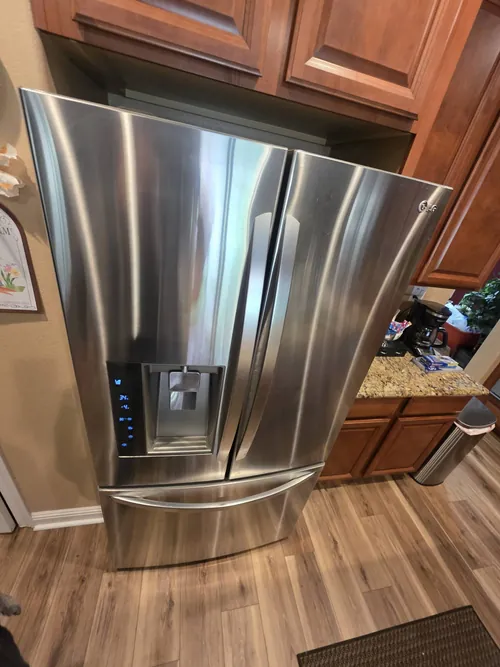

LG Refrigerator Repair: Understanding Evaporator Fan Motor Failures
Modern refrigerators depend on proper airflow to maintain consistent temperatures throughout the appliance. While most homeowners are familiar with compressors and cooling systems, fewer understand the important role played by the evaporator fan motor. This component is responsible for circulating cold air from the evaporator coils throughout the refrigerator and freezer compartments. When the evaporator fan motor begins to fail, cooling performance can quickly decline and lead to a variety of frustrating refrigerator problems.
Evaporator fan motor failures are among the most common issues diagnosed during professional LG refrigerator repair. Because airflow directly affects temperature regulation, even a partially functioning fan can create noticeable cooling problems. Understanding the warning signs of evaporator fan motor failure can help homeowners recognize issues early and prevent additional appliance damage.
The evaporator fan is typically located near the evaporator coils inside the freezer section. As refrigerant passes through the coils, cold air is produced and distributed throughout the appliance by the fan motor. Without proper airflow, cold temperatures remain trapped near the coils while other areas of the refrigerator receive insufficient cooling.

One of the earliest signs of evaporator fan motor problems is uneven cooling. Homeowners may notice that certain areas of the refrigerator remain cold while others become noticeably warmer. Food stored on one shelf may stay fresh while items on another shelf spoil more quickly. Because airflow is responsible for distributing cold temperatures evenly, reduced fan performance often creates these inconsistent cooling conditions.
Another common symptom is a freezer that appears to function normally while the refrigerator compartment becomes warm. Since most modern refrigerators generate cooling inside the freezer and rely on the evaporator fan to move cold air throughout the appliance, a failing fan motor may prevent proper airflow to the fresh food section. This is one of the most frequent reasons homeowners seek professional LG refrigerator repair.
Unusual noises often accompany evaporator fan motor failures. Clicking, humming, buzzing, squealing, rattling, or grinding sounds may indicate that the motor bearings are wearing out or that the fan blades are encountering resistance. In some cases, ice buildup near the fan assembly can create similar sounds. Any change in normal operating noise should be evaluated before additional damage occurs.
Excessive frost accumulation may also indicate airflow problems related to the evaporator fan. Proper air circulation helps maintain balanced temperatures and supports normal defrost system operation. When airflow becomes restricted, frost may accumulate around cooling components and further reduce refrigerator efficiency.
Over time, this can create a cycle of worsening cooling performance and increasing frost buildup.Temperature fluctuations are another warning sign. A refrigerator that occasionally cools properly but struggles to maintain stable temperatures may be experiencing intermittent fan motor operation. In some cases, the fan may start and stop unpredictably due to electrical issues, motor wear, or electronic control problems. These intermittent failures can be difficult to diagnose without proper testing procedures.
Modern LG refrigerators often monitor fan performance electronically. If the control system detects abnormal fan operation, the refrigerator may display an error code or generate a system alert. However, not all evaporator fan problems immediately trigger warnings. Professional LG refrigerator repair technicians use specialized diagnostic procedures to evaluate fan performance and verify proper airflow throughout the appliance.
Electrical problems can also contribute to evaporator fan failures. Damaged wiring, loose connections, faulty sensors, or control board malfunctions may prevent the fan from operating correctly even when the motor itself remains functional. This is why accurate diagnostics are essential when troubleshooting airflow related refrigerator problems.
Homeowners sometimes mistake evaporator fan failures for compressor problems because both issues can create cooling deficiencies. However, replacing major components without confirming the actual cause often results in unnecessary expenses. Professional diagnostics help determine whether the cooling problem originates from the fan motor, airflow restrictions, electronic controls, or another refrigerator system.
Preventive maintenance can help reduce the risk of airflow related issues. Keeping vents clear, maintaining proper freezer organization, addressing frost buildup promptly, and responding quickly to unusual noises may help protect refrigerator performance and improve long term reliability.
Professional LG refrigerator repair focuses on identifying the root cause of cooling problems while restoring proper airflow and temperature distribution throughout the appliance. Whether your refrigerator is experiencing uneven cooling, unusual noises, frost buildup, or warm temperatures in the fresh food compartment, understanding the role of the evaporator fan motor can help homeowners recognize problems early and maintain reliable refrigerator operation for years to come.